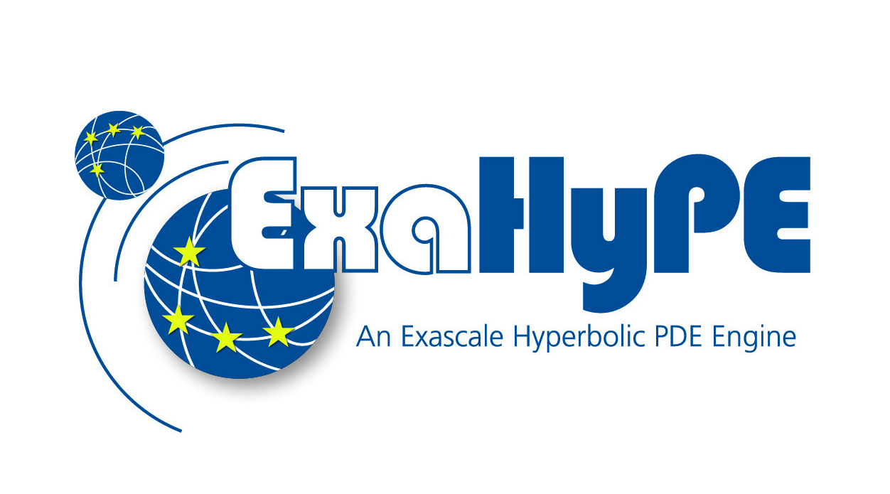

|
Peano
|
|
Peano
|

ExaHyPE 2 is a hyperbolic PDE engine. You write down a system of conservation laws - sound waves, water waves, compressible flow - in a handful of lines of Python, and ExaHyPE generates, compiles and runs an optimised C++ solver for you. Cartesian meshes, adaptive mesh refinement, and shared- and distributed-memory parallelism all come for free, so you get to concentrate on the physics.
These five tutorials take you from a blank notebook to five working solvers. Each one is a self-contained Jupyter notebook with a small C++ implementation, and each builds on the one before, so work through them in order.
You need a JupyterLab with ExaHyPE 2 and its Python API on the path. The fastest route is the prebuilt tutorials container; if Docker is not an option, build ExaHyPE 2 from source and start JupyterLab yourself.
Everything is baked into the peanoframework/exahype2-tutorials image on Dockerhub: the compiled code, the notebooks and the JupyterLab server. Pull it and run:
docker pull peanoframework/exahype2-tutorials docker run -p 8888:8888 peanoframework/exahype2-tutorials
then open http://localhost:8888 in your browser and start with the first notebook in 01_acoustic/.
linux/amd64, but it runs on M-series Macs through Docker Desktop's emulation. Just add --platform linux/amd64: docker run --platform linux/amd64 -p 8888:8888 peanoframework/exahype2-tutorials.If Docker does not work for you, build ExaHyPE 2 yourself and launch JupyterLab locally. You need a C++20 compiler, CMake 3.27+, Python 3.11+ and HDF5 (the tutorials' plotter output is HDF5-based); MPI and OpenMP are recommended. The full dependency list is on Installation.
On most systems the compiler, CMake, MPI, HDF5 and NetCDF come straight from the package manager. ExaHyPE writes its output in parallel, so pick the MPI-enabled (parallel) flavours of HDF5 and NetCDF:
# Ubuntu / Debian
sudo apt-get install build-essential cmake python3-venv libopenmpi-dev \
libhdf5-openmpi-dev libnetcdf-mpi-dev libnetcdf-c++4-dev
# Fedora / RHEL
sudo dnf install gcc-c++ cmake openmpi-devel \
hdf5-openmpi-devel netcdf-openmpi-devel netcdf-cxx4-openmpi-devel
# macOS (Homebrew)
brew install cmake open-mpi hdf5-mpi netcdf netcdf-cxx
Then clone, build and launch:
# GIT_LFS_SKIP_SMUDGE=1 lets the clone succeed even without git-lfs installed GIT_LFS_SKIP_SMUDGE=1 git clone -b muc/exahype https://gitlab.lrz.de/hpcsoftware/Peano.git exahype2 --depth 1 cd exahype2 # 1. Build the ExaHyPE 2 libraries (multithreading, MPI and HDF5 are on by default) mkdir build cd build cmake .. make -j$(nproc) # $(nproc) builds with one job per core; replace with a number to cap it cd .. # 2. Create a Python virtual environment and install the Python API (editable) # plus the notebook dependencies into it - this keeps your system Python # untouched (and many distributions refuse system-wide pip installs anyway) python3 -m venv venv source venv/bin/activate pip install -r requirements.txt pip install -e . # 3. Launch JupyterLab on the tutorials cd tutorials jupyter lab
JupyterLab opens in your browser; start with 01_acoustic/AcousticWaves.ipynb. The notebooks add the freshly built Python API to their own path, so they pick up the sources you just compiled.
cd exahype2 && source venv/bin/activate && cd tutorials && jupyter lab.01_acoustic/): a fully worked, linear ADER-DG solver. Learn the whole build / run / visualise loop.02_shallow-water/): implement a non-linear ADER-DG solver yourself, with a non-conservative product and static mesh refinement.03_euler/): a worked Finite Volumes solver for compressible flow over an airfoil, with a bow shock and static mesh refinement.04_limiting/): a 2D Euler shock with an a-posteriori limiter, where troubled high-order cells fall back to Finite Volumes. See what happens to the high-order scheme when you switch the limiter off.05_elastic/): 3D elastic waves with an interactive cube slicer, and a first taste of HPC - measure how the solver scales across MPI ranks.Each tutorial closes with suggestions for your own experiments.